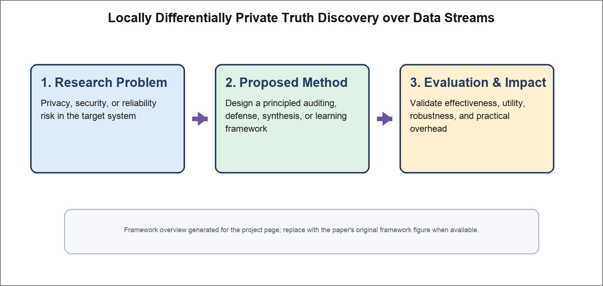

Locally Differentially Private Truth Discovery over Data Streams
IEEE Transactions on Mobile Computing (TMC) 2026

Abstract
Truth discovery is an important primitive for crowdsensing systems, where the goal is to infer reliable truths from streaming reports provided by multiple workers with different quality levels. Existing local differential privacy methods for truth discovery are mostly designed for static data and perform poorly in streaming environments with dynamic worker participation and concept drift. We present a locally differentially private truth discovery framework for data streams that jointly updates worker reliability and latent truths online while satisfying rigorous privacy guarantees. Extensive evaluations demonstrate that the proposed approach achieves better utility and robustness than prior baselines in realistic streaming scenarios.
Resources
Citation
@inproceedings{ZZCWCZ26,
author = {Pengfei Zhang and Zhikun Zhang and Yang Cao and Shaowei Wang and Xiang Cheng and Ji Zhang},
title = {{Locally Differentially Private Truth Discovery over Data Streams}},
booktitle = {{Transactions on Mobile Computing}},
publisher = {IEEE},
year = {2026},
}